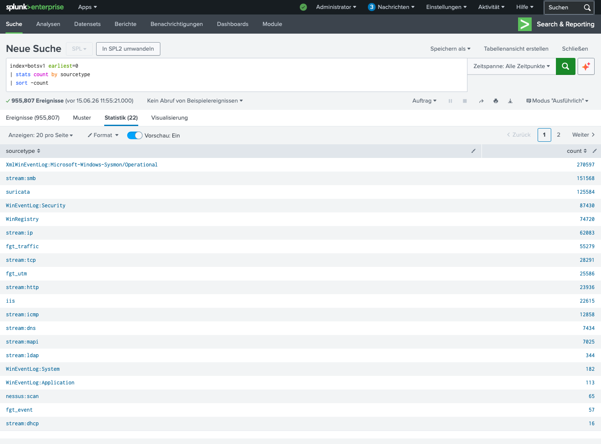
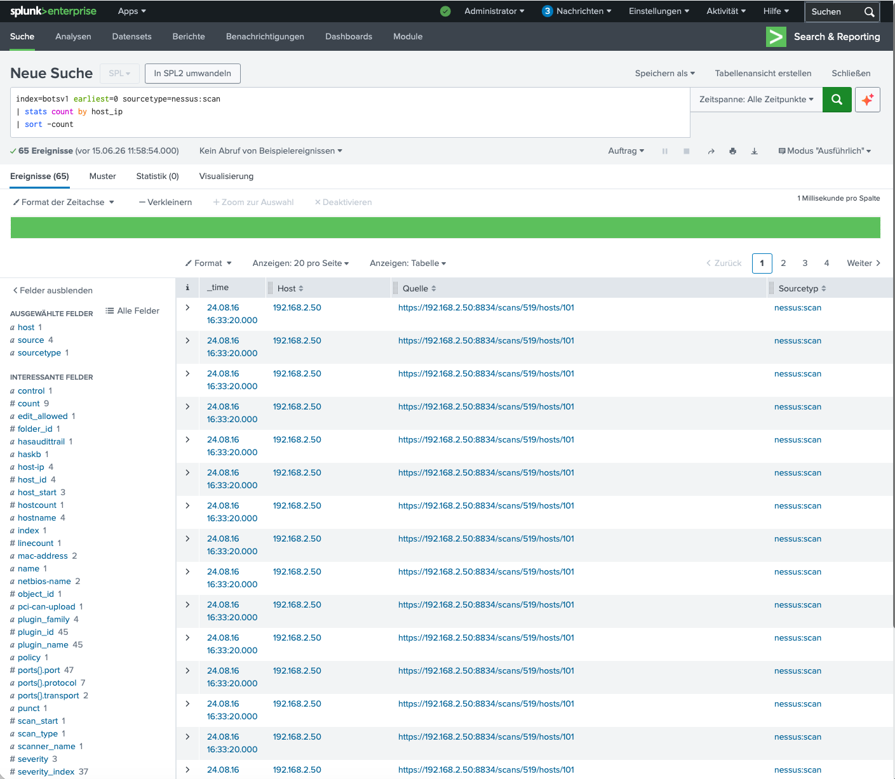
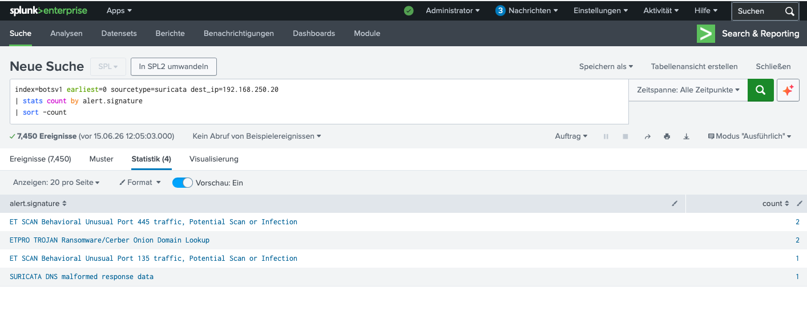

Lab-Setup
Das SOC-Home-Lab besteht aus einem Splunk-Enterprise-Container, der per Terraform und Docker
auf einem Mac mit Apple Silicon betrieben wird. Die gesamte Infrastruktur ist als Code
versioniert und kann mit einem einzigen terraform apply
neu aufgebaut werden.
Datenquelle: Der BOTS v1 (Boss of the SOC) Datensatz von Splunk enthält echte Angriffsdaten aus einer simulierten Unternehmensumgebung — 955.807 Events über 22 verschiedene Sourcetypes.
Schritt 1 — Reconnaissance: Log-Quellen identifizieren
Als Erstes verschaffen wir uns einen Überblick über die verfügbaren Log-Quellen. Das ist die Grundlage jeder SOC-Investigation: Wissen, welche Daten wir haben und wie sie strukturiert sind.
Diese Query zeigt alle 22 Log-Quellen sortiert nach Event-Anzahl. Die Top-Quellen sind Sysmon (270.597 Events), SMB-Netzwerktraffic (151.568) und Suricata-IDS-Alerte (125.584).

Abb. 1 — Alle 22 Sourcetypes des BOTS v1 Datensatzes (Statistik: 22)
| Sourcetype | Events | Bedeutung |
|---|---|---|
| XmlWinEventLog:Microsoft-Windows-Sysmon/Operational | 270.597 | Endpoint-Monitoring (Process, Network, File) |
| stream:smb | 151.568 | SMB-File-Sharing — Lateral Movement |
| suricata | 125.584 | IDS/IPS Alerte |
| WinEventLog:Security | 87.430 | Windows Security Events |
| WinRegistry | 74.720 | Registry-Änderungen |
| nessus:scan | 65 | Vulnerability-Scan Ergebnisse |
Schritt 2 — Nessus-Scan: Das Angriffsziel identifizieren
Nessus-Scan-Logs sind ein starker Indikator für Reconnaissance. Ein Angreifer scannt das Netzwerk, um verwundbare Systeme zu finden.
Die Query zeigt: Vier verschiedene IP-Adressen wurden gescannt.
192.168.250.20 wurde mit 37 Scan-Einträgen am häufigsten getroffen —
das ist das primäre Angriffsziel. Der host_ip Versuch liefert 0 Results,
weil das korrekte Field host-ip (mit Bindestrich) heißt —
ein typisches SPL-Lernmoment.

Abb. 2 — Nessus Rohdaten: Das Field heißt hier 'host_ip', nicht 'host-ip'. Der Aggregation-Query muss 'host-ip' (mit Bindestrich) verwenden.
| Taranan IP (host-ip) | Scan-Anzahl | Bewertung |
|---|---|---|
| 192.168.250.20 | 37 | 🔴 Primäres Ziel |
| 192.168.250.100 | 24 | 🟡 Sekundäres Ziel |
| 192.168.250.40 | 2 | 🟢 Minimal |
| 192.168.250.41 | 2 | 🟢 Minimal |
Schritt 3 — Suricata-IDS: Cerber Ransomware detektieren
Mit dem primären Ziel 192.168.250.20 filtern wir die Suricata-IDS-Alerte.
Suricata erkennt bekannte Attack-Patterns anhand von Signaturen.
Das Ergebnis ist eindeutig: Cerber Ransomware wurde identifiziert!
Die Suricata-Signatur ETPRO TROJAN Ransomware/Cerber Onion Domain Lookup
zeigt, dass der infizierte Host versucht, mit einer .onion-Domain zu kommunizieren —
typisch für Ransomware-C2 über das Tor-Netzwerk.

Abb. 3 — Suricata-IDS detektiert Cerber Ransomware (ETPRO TROJAN Ransomware/Cerber)
| Alert Signature | Count | Phase |
|---|---|---|
| ET SCAN Behavioral Unusual Port 445 traffic | 2 | Reconnaissance (SMB-Scan) |
| ETPRO TROJAN Ransomware/Cerber Onion Domain Lookup | 2 | C2 Communication |
| ET SCAN Behavioral Unusual Port 135 traffic | 1 | Reconnaissance (NetBIOS) |
| SURICATA DNS malformed response data | 1 | DNS-Anomalie |
Critical Finding: Die Suricata-Signatur "ETPRO TROJAN Ransomware/Cerber Onion Domain Lookup" ist ein eindeutiger Indikator für Cerber-Ransomware. Der verschlüsselte Tor-Traffic zeigt, dass der Angreifer bereits C2-Kommunikation aufgebaut hat.
Attack-Timeline
Die vier detektierten Suricata-Alerte ergeben eine klare Attack-Kette:
Phase 1 — Reconnaissance: Port-Scan auf SMB (445) und NetBIOS (135) →
Netzwerk-Kartierung durch den Angreifer.
Phase 2 — Exploitation: SMB-Exploit für Initial Access.
Phase 3 — C2: Cerber installiert sich und kommuniziert über
.onion-Domains via Tor.
Fazit
In dieser Investigation haben wir aus 955.807 Events eine klare Attack-Kette rekonstruiert:
- Reconnaissance: Nessus-Scan zeigt 192.168.250.20 als primäres Ziel (37 Scans)
- Network Scan: Suricata detektiert SMB/NetBIOS-Port-Scans
- Malware: Suricata-Signatur identifiziert Cerber Ransomware
- C2: .onion-Domain-Lookup über Tor bestätigt Ransomware-Kommunikation
Diese Übung zeigt, wie ein SOC-Analyst mit Splunk und SPL aus rohen Log-Daten eine strukturierte Threat-Hunting-Investigation durchführt — von der Quellen-Analyse über die Ziel-Identifikation bis zur Malware-Detektion.
Next Steps: SMB-Traffic-Analyse für Lateral Movement, DNS-Query-Analyse für C2-Domains, und Windows-EventLog-Analyse für Privilege Escalation.